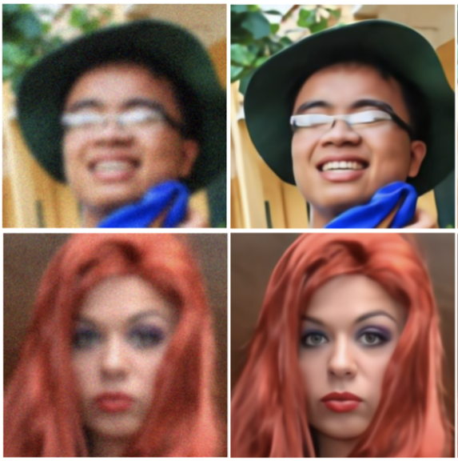
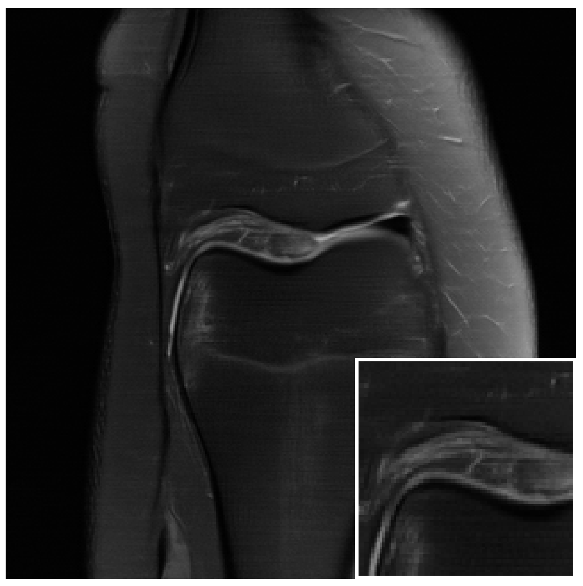

|
Research
My current research direction aims to analyze convergence of shallow neural networks with small initialization as well as developing algorithms for inverse problems (such as denoising, deblurring, MRI reconstruction, etc.). Recently, I am also interested with
reasoning in large language models (LLMs), particularly the ability to do self-feedback and which tasks actually benefit from it. Selected papers are shown below.
|
|

|
DiracDiffusion: Denoising and Incremental
Reconstruction with Assured Data-Consistency
Zalan Fabian,
Berk Tinaz,
Mahdi Soltanolkotabi,
arXiv, 2023
GitHub
/
Paper Link
Novel framework for solving inverse problems that maintains consistency with
the original measurement throughout the reverse process and allows for great flexibility in trading
off perceptual quality for improved distortion metrics and sampling speedup via early-stopping.
|
|

|
HUMUS-Net: Hybrid Unrolled Multi-scale Network
Architecture for Accelerated MRI Reconstruction
Zalan Fabian,
Berk Tinaz,
Mahdi Soltanolkotabi,
NeurIPS, 2022
GitHub
/
Paper Link
A Hybrid architecture that combines the implicit bias and efficiency of conbolutions with the power of Transformer blocks in an unrolled and multi-scale network to establish SOTA on fastMRI dataset.
|
|
{kind=link}